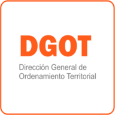

Simulacro Tsunami Ushuaia
Cargando mapas...
📲 Instalar App en el Teléfono
DGOT · Ushuaia
GPS: Esperando
📑 Capas del Proyecto
▼
Recorte y Etiquetas
🔲 Zona del recorte
🏷️ Etiquetas del Mapa
Nuevo Simulacro
🟦 Escaleras
➡️ Vías de evacuación
🟩 Línea Zona Segura
🔴 Posibles Centros Comando
🟥 Vía Sanitaria
⬛ Polígono Contorno
✴️ Puntos de Encuentro
Calles y Puentes
🟥 Puentes
⚪ Calles
Población Vulnerable
🏠 Población Vulnerable
Equipamientos
➕ Centros Públicos Salud
🏥 Centros Privados Salud
🏛️ Poder Legislativo
🔥 Cuartel de Bomberos
✵ Edificio de Seguridad
⚽ Instalaciones Deportivas
📘 Ciencia y Educación
🎓 Instituciones Educativas
Infraestructura
⛽ Estación de Servicios
🚰 Planta Potabilizadora
🗼 Antenas
⚡ Grupo Electrógeno
Hidrografía y Base
⚠️ Área Evacuación
💧 Corriente de agua
🟦 Espejo de agua
🟫 Humedales
🛰️ ESRI Satellite (B/N)